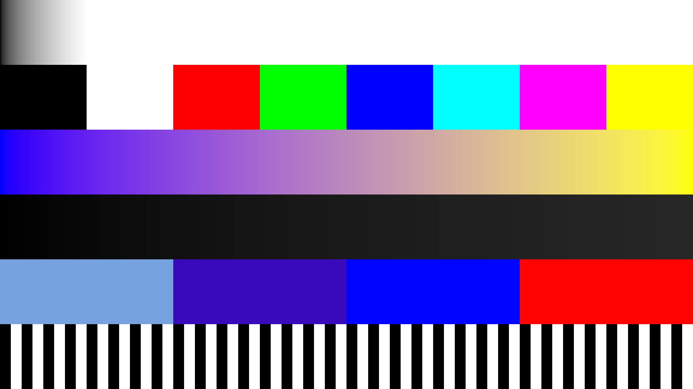
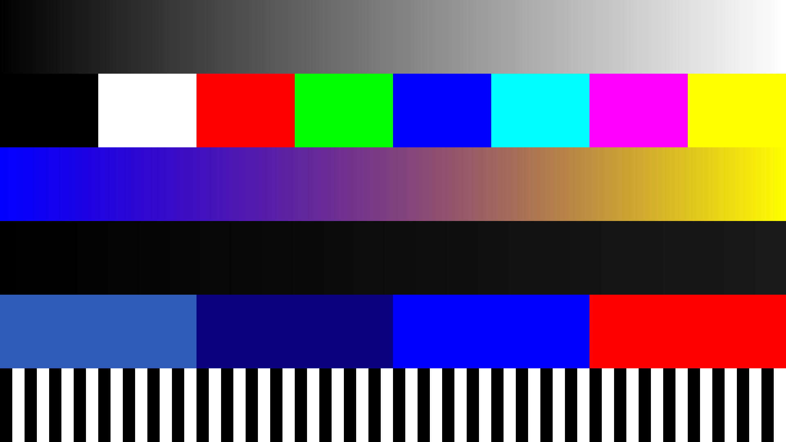
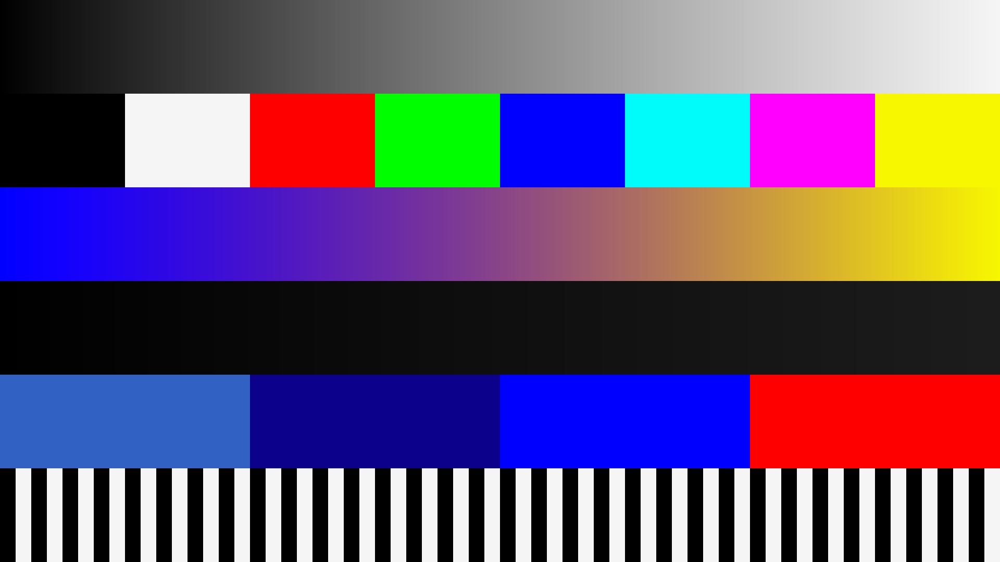

1080p, rgba16f, PSLinear


Original synthetic charts on a separate D3D11 device. These are not game captures, Pure calibration, an artistic improvement claim, or gameplay performance evidence. Input, exact identity readback, and processed readback are shown. See report.json for hashes and numerical results.
Rows: neutral ramp; primary/secondary patches; color ramp; near-black ramp; transfer breakpoints and range extremes; hard edges. Exposure +0.25 EV, shoulder 0.25, saturation 1.0. Floating-point textures use explicit shader conversion rather than automatic sRGB views. Linear previews are encoded to sRGB and clipped for RGB8 display; HDR extremes can clip. Alpha is tested separately.



